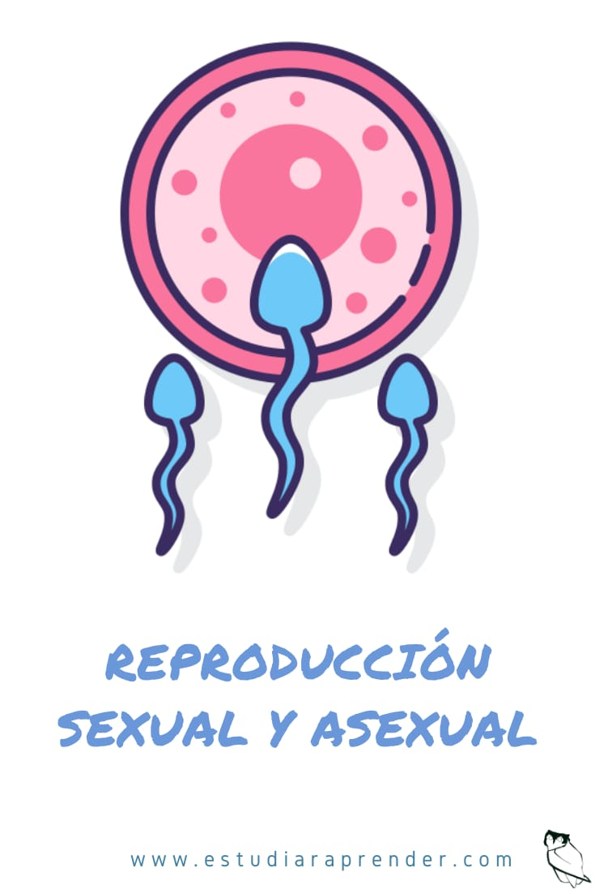

Reproduccion
La reproducción es un proceso fundamental para la supervivencia y continuación de una especie. Se refiere a la producción de descendencia, ya sea de manera sexual o asexual.
La reproducción sexual implica la unión de gametos, que son células especiales encargadas de transmitir la información genética de los padres a la descendencia. En los seres humanos, por ejemplo, los gametos son los espermatozoides en los hombres y los óvulos en las mujeres. Durante la reproducción sexual, se produce la fecundación, donde un espermatozoide se fusiona con un óvulo para formar un embrión. Posteriormente, el embrión se desarrolla y crece dentro del cuerpo de la madre.
Por otro lado, la reproducción asexual no requiere la participación de gametos ni la unión de células reproductoras. En este caso, un organismo se reproduce a sí mismo, generando clones idénticos a él mismo. Esto puede ocurrir a través de diferentes mecanismos, como la división celular o la formación de esporas. La reproducción asexual es común en muchos organismos, como las bacterias, las plantas y algunos animales.
Ambos tipos de reproducción tienen ventajas y desventajas. La reproducción sexual permite la variabilidad genética y la adaptación a cambios ambientales, pero requiere de una mayor inversión de energía y recursos. Por otro lado, la reproducción asexual es más rápida y eficiente, pero limita la diversidad genética y la capacidad de adaptación.
En resumen, la reproducción es un proceso esencial para la perpetuación de la vida en diferentes formas de vida. Tanto la reproducción sexual como la asexual son estrategias utilizadas por los organismos para asegurar la supervivencia de su especie.

REGRESAR